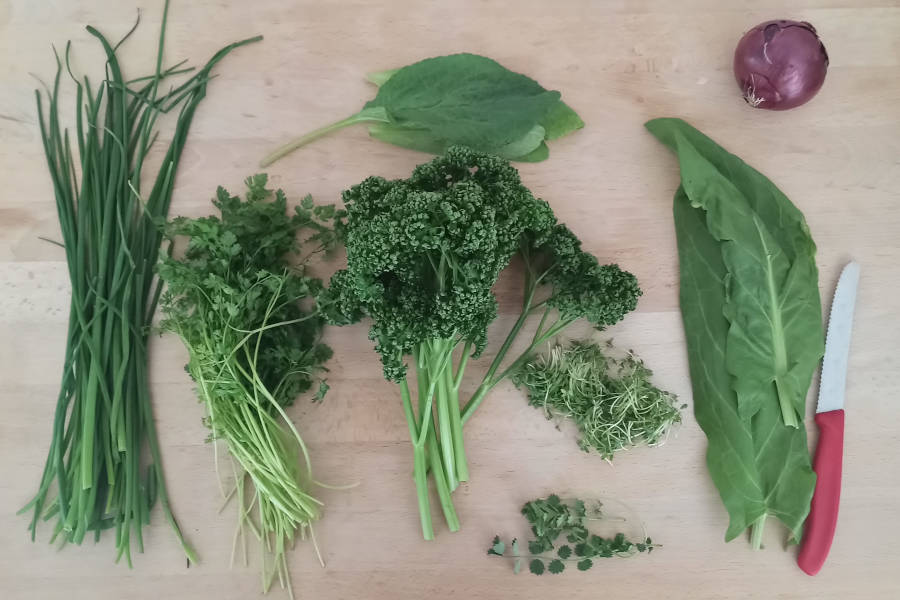
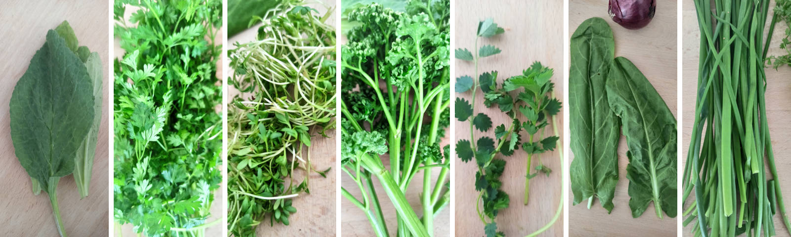

Frankfodder Grie-Soß
Quelle und weitere Informationen: https://github.com/OMerkel/recipes
Zum Rezepte-Index 🍲
… auch "Frankfurter Grüne-Soße" genannt.

Zutaten
-
1 Batzen der sieben Kräuter
-
Petersilie,
-
Schnittlauch,
-
Borretsch,
-
Kresse,
-
Sauerampfer,
-
Kerbel und
-
Pimpernelle (Kleiner Wiesenknopf)
-
-
250 ml saure Sahne
-
500 ml Joghurt / Quark
-
8 Stk Cornichons
-
2 EL mittelscharfer Senf
-
1 Knoblauchzehe
-
2 EL Zitronensaft
-
1 Prise Salz
Zubereitung
-
Kräuter kleinhacken und die Hälfte davon in Joghurt und saurer Sahne mit Stabmixer weiter zerkleinern.
-
Cornichons würfeln, Knoblauch zerdrücken und mit restlichen Zutaten und restlichen Kräutern dem Joghurt vorsichtig unterrühren.


Alphabetisch sortiert beginnend von links: Borretsch, Kerbel, Kresse, Petersilie, Pimpernelle, Sauerampfer und Schnittlauch
TIPP Eine Möglichkeit der Zubereitung ist es, die Grie-Soß mit Pell- oder Salzkartoffeln zu hartgekochten Eiern anzurichten. Alternativ gibt man Grüne-Soße auf ein und zu einem panierten Schnitzel mit Bratkartoffeln, so wird es als Frankfurter Schnitzel bezeichnet.